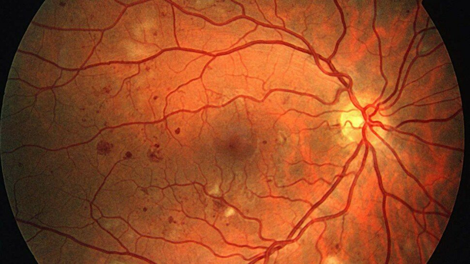
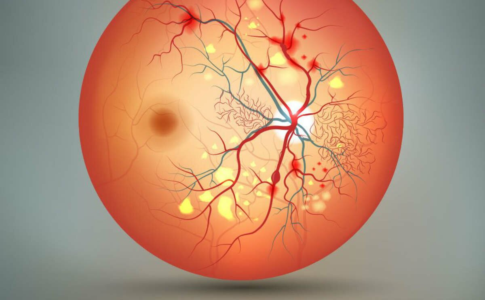

Diabète et œil : les complications au-delà de la rétinopathie diabétique
Le diabète n’est pas sans conséquence sur la vision. L’hyperglycémie liée au diabète peut endommager les petits vaisseaux de la rétine, au niveau du fond de l’œil, et conduire à la rétinopathie diabétique. C’est en général après plusieurs années d’évolution du diabète que celle-ci apparait. Aujourd’hui, environ un patient atteint de diabète sur 3 est touché par cette complication mais tous les patients diabétiques, sans exception, sont à risque de développer une rétinopathie diabétique. Néanmoins, plus la durée du diabète est longue et plus la glycémie et/ou la pression artérielle sont élevées, plus le risque de développer cette complication est important.
Si elle n’est pas repérée et traitée à temps, la rétinopathie diabétique peut entrainer une perte de vue progressive voire une cécité. C’est d’ailleurs l’une des premières causes de cécité et de baisse visuelle chez les sujets en âge de travailler, notamment par la maculopathie qu’elle induit. Alors, comment diagnostiquer la rétinopathie diabétique avant le stade des complications ? Par la réalisation d’un examen du fond d’œil, qui est pratiqué chez un ophtalmologue au moyen d’une analyse microscopique réalisée après dilatation de la pupille, couplée à des photographies numérisées de la rétine et complétée au besoin par une angiographie rétinienne à la fluorescéine. Ces examens permettent de déceler avec une grande sensibilité, la présence d’une rétinopathie (c’est à dire d’anomalies du fond de l’œil telles que des micro-anévrysmes, ou des hémorragies), alors même que le patient ne se plaint d’aucune baisse visuelle. En effet, les symptômes visuels et les signes d’alerte de la maladie sont de survenue tardive, même à un stade avancé de la maladie. Il est donc indispensable de réaliser un dépistage de la rétinopathie diabétique selon les recommandations actuelles, validées par la Société Française d’Ophtalmologie et la Société Francophone du Diabète (SFD).
Chaque patient diabétique doit bénéficier d’un suivi ophtalmologique annuel, afin de déceler un stade précoce et proposer un éventuel traitement de la rétinopathie diabétique ou de l’œdème maculaire (par laser ou injections intra-vitréennes) qui permettra de soigner la rétinopathie et de préserver au mieux la fonction visuelle. En effet, lorsque la rétinopathie diabétique devient proliférante, elle signe un stade avancé de la maladie et survient chez les patients dont l’équilibre glycémique n’est pas atteint pendant de nombreuses années. Elle peut conduire à une perte de vision définitive. Elle est liée à l’atteinte de la paroi des capillaires rétiniens du fond d’œil, qui aboutit à une occlusion étendue des vaisseaux, et induit une diminution importante de la délivrance en oxygène à la rétine (ischémie rétinienne). Il en résulte une prolifération anormale d’une multitude de petits vaisseaux à la surface de la rétine. Ces derniers peuvent entraîner une hémorragie du vitré, un risque de déchirure rétinienne voire un décollement de la rétine, et au stade ultime, un glaucome néovasculaire qui se manifeste par une augmentation majeure de la pression intra oculaire (PIO) et expose le plus souvent à la cécité totale. Le traitement incontournable repose sur le laser rétinien, associé à des injections intra-oculaires (injections intra-vitréennes), et parfois même, à une intervention chirurgicale (vitrectomie).
La prévention de la rétinopathie diabétique, comme celles des autres complications du diabète, repose, au-delà du contrôle glycémique optimal, sur une bonne hygiène de vie, notamment la pratique d’une activité physique régulière et une alimentation adaptée, un bon équilibre de la pression artérielle, l’éviction du tabac, et un contrôle du bilan lipidique.
Cependant, si la rétinopathie diabétique est par définition la complication ophtalmologique la plus souvent recherchée chez le patient diabétique, le diabète affecte aussi la vision en augmentant la susceptibilité à développer d’autres pathologies oculaires, qui font l’objet de cet article.

Sommaire
- Introduction : c'est quoi la rétinopathie ?
- La cataracte est plus fréquente et de survenue plus précoce chez le patient diabétique
- Des grandes variations glycémiques peuvent s’accompagner de troubles de la réfraction
- Le diabète augmente le risque de glaucome chronique à angle ouvert
- Le diabète n’augmente pas le risque de dégénérescence maculaire liée à l’âge (DMLA)
- Le diabète : facteur de risque de maladies vasculaires oculaires
- Autres atteintes oculaires
- Conclusion
- Conflits d’intérêt
- Sources
Introduction : c'est quoi la rétinopathie ?
La cataracte est plus fréquente et de survenue plus précoce chez le patient diabétique

Le diabète n’augmente pas le risque de dégénérescence maculaire liée à l’âge (DMLA)
La DMLA est la première cause de cécité chez les patients âgés dans les pays européens. Elle touche la macula, qui est la zone située au centre de la rétine et qui permet une vision fine, notamment la lecture. Son atteinte engendre une baisse visuelle, à type de tache et/ou de déformations au centre de la vision.
Les études ne montrent pas de risque accru de DMLA chez les patients diabétiques. La fréquence de la DMLA était par exemple similaire chez les patients atteints ou non de diabète dans une étude rétrospective taïwanaise menée à grande échelle (plus de 50000 patients diabétiques appariés à 50000 non diabétiques) [14]. Le risque de DMLA était même réduit de moitié chez le patient diabétique dans 2 autres études. La première, une étude rétrospective menée au Royaume-Uni, a inclus plus de 40000 patients présentant un stade précoce de DMLA.
Tandis que l'âge, le sexe féminin et les maladies cardiovasculaires augmentaient le risque de progression vers une forme avancée de DMLA, le diabète était au contraire associé à une diminution de moitié du taux de progression vers une forme sévère de DMLA [15]. La survenue d’une DMLA était aussi réduite de 44% dans la deuxième étude menée sur une population russe [16]. Il est intéressant de mettre en perspective ces résultats avec ceux de trois études récentes évoquant un bénéfice du traitement par Metformine dans la réduction du risque de DMLA chez le patient diabétique. Dans la première étude, les sujets diabétiques de type 2 traités par Metformine (n=45524) avaient un risque réduit de moitié de développer une DMLA comparés aux 22681 sujets n’en utilisant pas [17].
Des résultats du même ordre ont été observés dans les 2 autres études menées sur des populations nord-américaines où les patients sous Metformine développaient plus rarement une DMLA [18,19].

Le diabète : facteur de risque de maladies vasculaires oculaires
Sources
- Burton MJ, Ramke J, Marques AP, et al. The Lancet Global Health Commission on Global Eye Health: vision beyond 2020 Lancet Glob Health. 2021;9:e489-e551. Epub 2021 Feb 16.
- Antonetti DA, Klein R and Gardner TW. Diabetic retinopathy. N Engl J Med 2012;366:1227-39.
- Jeganathan VS, Wang JJ, Wong TY. Ocular associations of diabetes other than diabetic retinopathy. Diabetes Care 2008;31:1905-12.
- Liu YC, Wilkins M, Kim T, et al. Cataracts. Lancet 2017;390:600-12.
- Delcourt C, Cristol JP, Tessier F, et al. Risk factors for cortical, nuclear, and posterior subcapsular cataracts: the POLA study. Pathologies Oculaires Liées à l'Age. Am J Epidemiol. 2000;151:497-504.
- Wu J, Zeng H, Xuan R, et al. Bilateral cataracts as the first manifestation type 1 diabetes mellitus: A case report Medicine (Baltimore) 2018;97:e12874.
- Becker C, Schneider C, Aballéa S, et al Cataract in patients with diabetes mellitus-incidence rates in the UK and risk factors. Eye 2018;32:1028-35.
- Stratton IM, Adler AI, Neil HAW, et al. Association of glycemia with macrovascular and microvascular complications of type 2 diabetes (UKPDS 35): prospective observational study. BMJ 2000;321:405-12.
- Tham YC, Liu L, Rim TH, et al. Association of cataract surgery with risk of diabetic retinopathy among Asian participants in the Singapore Epidemiology of Eye Diseases Study. JAMA Netw Open. 2020;3:e208035.
- Kaštelan S, Gverović-Antunica A, Pelčić G, et al. Refractive changes associated with diabetes mellitus. Semin Ophthalmol. 2018;33:838-45.
- Jung Y, Han K, Park H-Y L, et al. Type 2 diabetes mellitus and risk of open-angle glaucoma development in Koreans: An 11-year nationwide propensity-score-matched study. Diabetes Metab. 2018;44:328-32.
- Zhao D, Cho J, Kim MH, et al. Diabetes, fasting glucose and the risk of glaucoma. A meta analysis. Ophthalmology 2015;122 :72-8.
- Choi JA, Park YM, Han K, et al. Fasting plasma glucose level and the risk of open angle glaucoma: Nationwide population-based cohort study in Korea. PLoS One 2020;15:e0239529.
- He MS, Chang FL, Lin HZ, et al. The Association Between Diabetes and Age-Related Macular Degeneration Among the Elderly in Taiwan. Diabetes Care 2018;41: 2202-11.
- Chakravarthy U, Bailey CC, Scanlon PH, et al. Progression from early/intermediate to advanced forms of age-related macular degeneration in a large UK cohort: rates and risk factors. Ophthalmol Retina 2020;4:662-72.
- Bikbov MM, Zainullin RM, Gilmanshin TR, et al. Prevalence and associated factors of age-related macular degeneration in a Russian population: The Ural Eye and Medical Study. Am J Ophthalmol. 2020;210:146-57.
- Chen YY, Shen YC, Lai YJ, et al. Association between metformin and a lower risk of age-related macular degeneration in patients with type 2 diabetes. J Ophthalmol. 2019;2019:1649156. eCollection 2019.
- Brown EE, Ball JD, Chen Z, et al. The common antidiabetic drug metformin reduces odds of developing age-related macular degeneration. Invest Ophthalmol Vis Sci. 2019;60:1470-7.
- Blitzer AL, Ham SA, Colby KA, et al. Association of metformin use with age-related macular degeneration: A case-control study. JAMA Ophthalmol. 2021;139:302-9.
- Scott IU, Campochiaro PA, Newman NJ, et al. Retinal vascular occlusions. Lancet 2020;396:1927-40.
- Wang Y, Wu S, Wen F, et al. Diabetes mellitus as a risk factor for retinal vein occlusion: A meta-analysis. Medicine (Baltimore) 2020;99;e19319.
- Santiago JG, Walia S, Sun JK, et al. Influence of diabetes and diabetes type on anatomic and visual outcomes following central rein vein occlusion Eye (Lond) 2014;28:259-68.
- Chang YS, Ho CH, Chu CC, et al. Risk of retinal artery occlusion in patients with diabetes mellitus: A retrospective large-scale cohort study PLoS One 2018;13; e0201627.
- Biousse V, Newman NJ. Ischemic optic neuropathies. N Eng J Med. 2015;372:2428-36.
- Chen T, Song D, Shan G, et al. The association between diabetes mellitus and nonarteritic anterior ischemic optic neuropathy: a systematic review and meta-analysis. PLoS One 2013;8:e76653.
- Patel SV, Holmes JM, Hodge DO, et al. Diabetes and hypertension in isolated sixth nerve palsy. A population-based study. Ophthalmology 2005;112:760-3.
- Ferdousi M, Kalteniece A, Azmi S, et al. Diagnosis of neuropathy and risk factors for corneal nerve loss in type 1 and type 2 diabetes: A corneal confocal microscopy study. Diabetes Care 2021;44:150-6.
- Yoo TK, Oh E. Diabetes mellitus is associated with dry eye syndrome: a meta-analysis. Int Ophthalmol. 2019;39:2611-20.